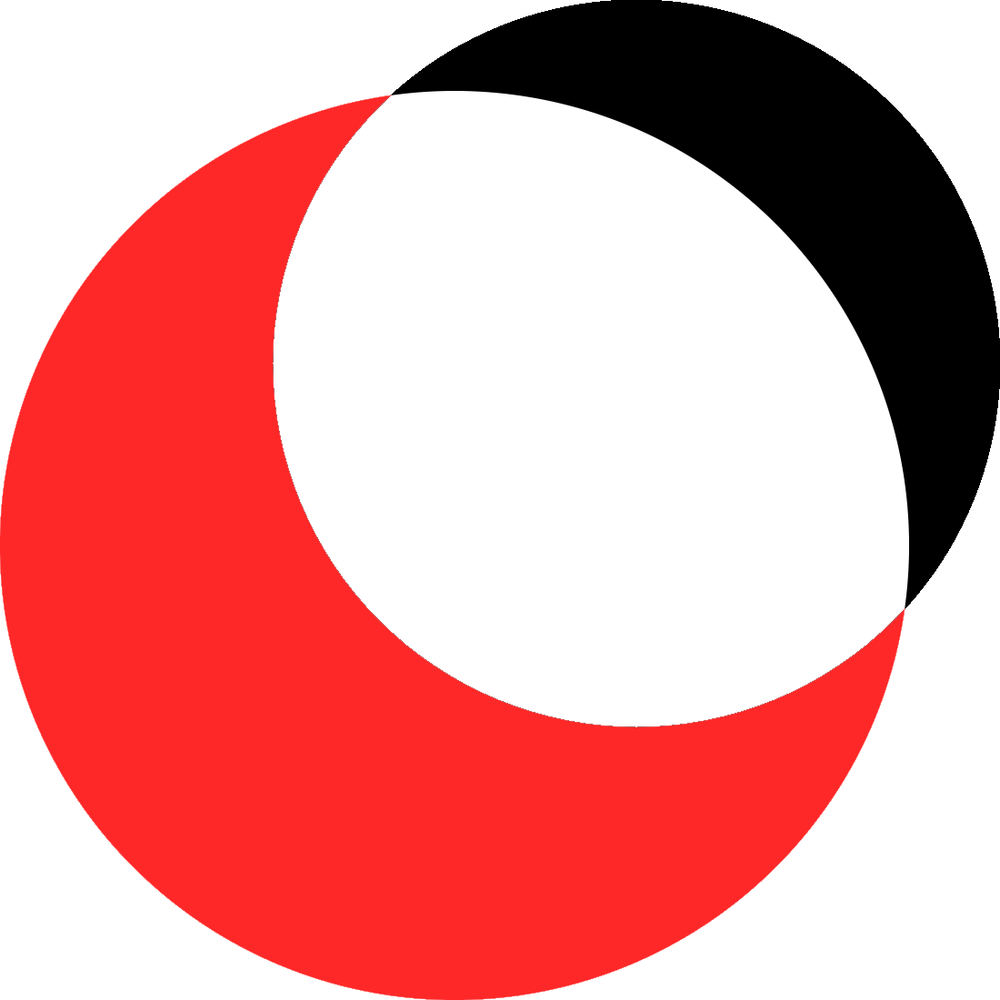
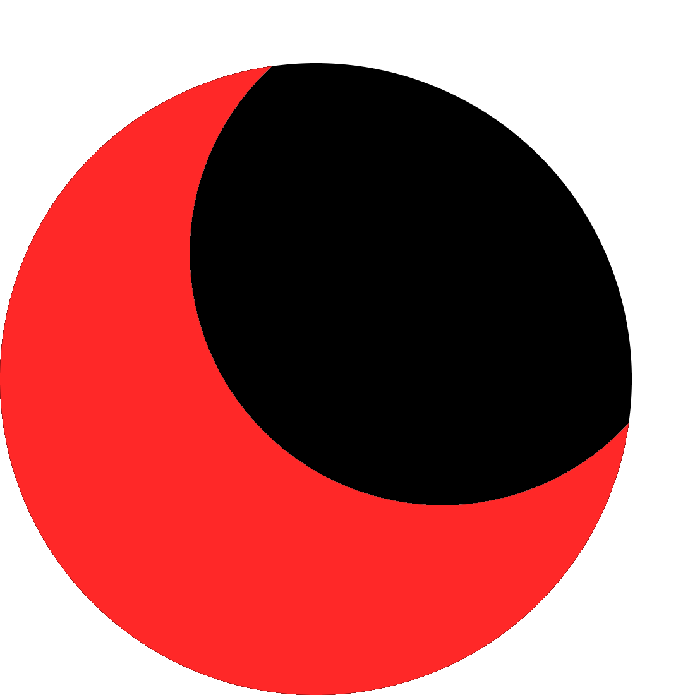

hihihihi hihihihi hihihihi hihihihi hihihihi hihihihi hihihihi hihihihi hihihihi hihihihi


The logo is a stylistic depiction of a solar eclipse.
The bounding box of the logo has side lengths 11.
The larger circle is tangent to the left and bottom sides of the bounding box and has radius 5.
The smaller circle is tangent to the top and right sides of the bounding box and has radius 4.
The larger circle is colored RED. The smaller circle can be colored WHITE or BLACK depending on the background.
The font used is Sofia Pro.
hihihihi hihihihi hihihihi hihihihi hihihihi hihihihi hihihihi hihihihi hihihihi hihihihi